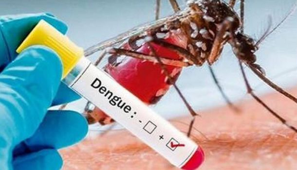

- No hay tratamiento: No hay agentes antivirales específicos contra el dengue.
- Se aconseja el cuidado de apoyo: A los pacientes se les debe aconsejar que se mantengan hidratados y que eviten tomar aspirina (ácido acetilsalicílico), medicamentos que contengan aspirina, y otros medicamentos antiinflamatorios no esteroideos (como el ibuprofeno), debido a sus propiedades anticoagulantes.
- La fiebre se debe controlar con acetaminofeno y baños tibios de esponja.
- Los pacientes febriles deben evitar las picaduras de mosquitos para reducir el riesgo de mayor transmisión.
Dengue grave
- Para las personas que presenten dengue grave se podría requerir una observación minuciosa y un monitoreo frecuente en una unidad de cuidados intensivos.
- Las transfusiones profilácticas de plaquetas no son beneficiosas en los pacientes con dengue y podrían contribuir a una hipervolemia.
- La administración de corticosteroides no tiene ningún beneficio demostrado y es potencialmente dañina para los pacientes; los corticosteroides no deben usarse, excepto en caso de una complicación relacionada con una afección autoinmunitaria (p. ej., linfohistiocitosis hemofagocítica, trombocitopenia inmunitaria, púrpura).